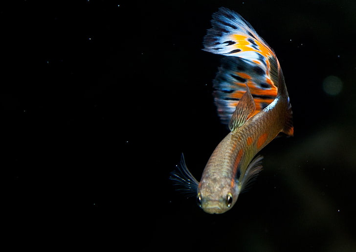

Lepistes balığı (Poecilia reticulata), akvaryum hobisinin en popüler ve en kolay bakımı yapılan türlerinden biridir. Güney Amerika kökenli olan bu canlı, küçük boyutuna rağmen canlı renkleri ve eşsiz desenleriyle dikkat çeker. Erkekleri genellikle daha gösterişli ve renkli olurken dişiler daha büyük ve sade görünümlüdür. Dayanıklı yapısı sayesinde farklı su koşullarına uyum sağlayabilir; 22–28°C sıcaklık aralığında ve pH 6.5–7.5 değerlerinde sağlıklı şekilde gelişir. Omnivor beslenme yapısına sahip olan lepistesler, canlı yemler, bitkisel yemler ve kaliteli kuru yemlerle beslenebilir. En dikkat çekici özelliklerinden biri ise canlı doğuran tür olmalarıdır; dişiler yumurta bırakmak yerine doğrudan yavru dünyaya getirir ve bu nedenle akvaryumda çok hızlı çoğalırlar. Zarif görünümü, dayanıklılığı ve kolay üremesiyle lepistes balığı, hem yeni başlayanlar hem de deneyimli akvaryum severler için vazgeçilmez bir türdür.